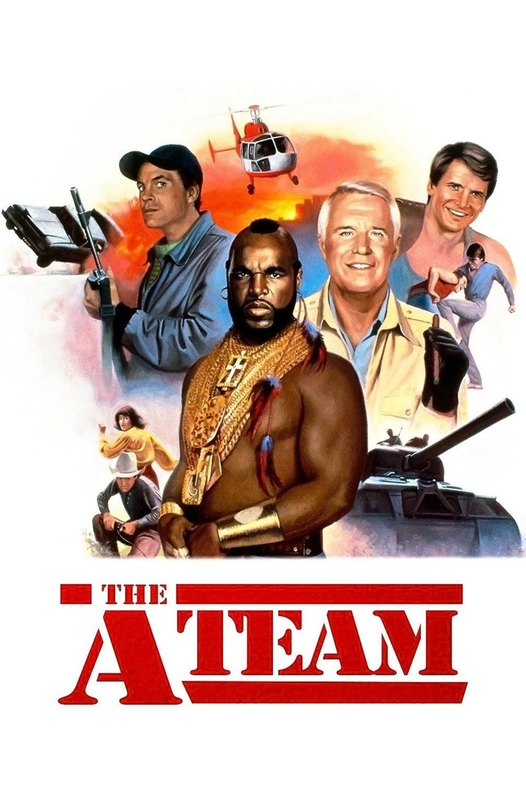

Mr. T
Scroll down, sucka!
Wrestlemania
Mr. T took his powerhouse persona into professional wrestling, teaming with Hulk Hogan at the first WrestleMania in 1985. The tag-team match made him part of wrestling history—and proved that even the squared circle wasn't ready for all that gold.
He returned to the ring at WrestleMania 2, stepping into a boxing match with “Rowdy” Roddy Piper. The crowd got a spectacle; Mr. T got one more chance to show that confidence is its own kind of entrance music.
“I pity the fool!”
The A-Team's muscle

As Sergeant Bosco “B. A.” Baracus on The A-Team, Mr. T brought the team's muscle, mechanical know-how, and unmistakable style. The mohawk and gold chains announced him before the van even pulled up.
B. A. was tough, loyal, and fiercely protective of his teammates and the people they helped. Beneath the gruff talk was a big heart—and one very firm rule about flying.
“I ain't gettin' on no plane!”
Rocky meets Clubber Lang
In Rocky III (1982), Mr. T burst onto the big screen as Clubber Lang, the hard-hitting challenger who pushed Rocky Balboa to his limits. It was a breakout role: raw intensity, sharp one-liners, and a glare that could make a heavy bag nervous.
Clubber was a formidable rival, but the performance made Mr. T a star in his own right. The role earned him a Golden Globe nomination and introduced movie audiences to a force they couldn't ignore.
“Pain!”
Standing up for kids
Away from the ring and the screen, Mr. T has put his fame to work for children. He has supported youth-focused charities and community causes, visited young people in hospitals, and used public appearances to encourage kids to stay in school and believe in themselves.
His message is straight to the point: be proud of who you are, treat people with respect, and don't let anybody convince you that you can't do great things.
“Be proud. Be kind. Be somebody's hero.”
Tough love. Real style.
The bravado was part of the show; compassion was part of the man. Through public appearances and charitable work, Mr. T has long championed kindness, humility, and looking out for other people. That combination is what makes the larger-than-life image feel genuinely human.
“Treat your mother right.”